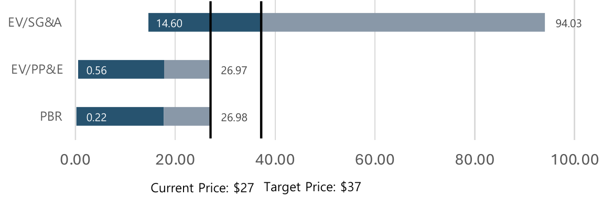
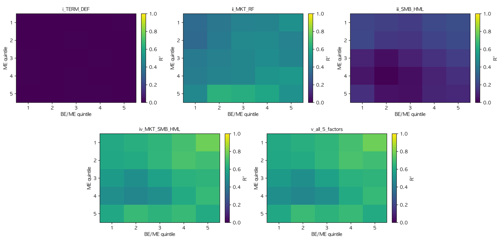
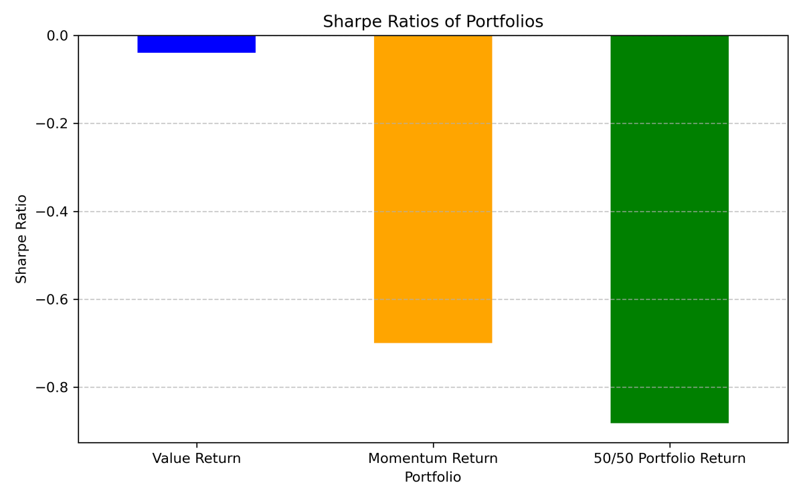

Selected work. Each entry shows one result and how it was measured.
Papers
Imperfect Alignment, Reliable Similarity: Score–Encoder Separation in Multimodal Contrastive LearningSubmitted
Seongje Hong, Wooseok Ha
Projects
Self-Improving LLM Search for Alpha ResearchSep. 2026 – Present
Personal project · adapts Google's Dream-RSI (2026)
An LLM agent proposes alpha hypotheses, backtests them, and revises the ones that fail. Dream-RSI improves the policy that decides which idea to try next and when to stop, by replaying recorded experiment trees instead of rerunning backtests. I rebuilt 444 recorded experiments into 59 replay bundles, revised the policy three times on 50 training bundles, and froze it before scoring 9 held-out bundles.
Data
group
policy
experiments
share of baseline
Training, 50 bundles
Baseline
376
100%
Training, 50 bundles
Revision 1
208
55%
Training, 50 bundles
Revision 2
165
44%
Training, 50 bundles
Revision 3 (selected)
135
36%
Held-out, 9 bundles
Baseline
55
100%
Held-out, 9 bundles
Revision 3 (selected)
40
73%
Experiments run per policy in offline replay, as a share of the baseline. Every policy found the same gate-passing record as the baseline (1 of 50 training bundles, 1 of 9 held-out). The saving comes from stopping unproductive searches earlier, not from finding an alpha sooner. Nine held-out bundles is a small sample, and the effect on new alphas in live research is not yet established.
Peer Selection from Filing TextNov. 2024
KAIST Financial Analysis Club · equity research on AST SpaceMobile (NASDAQ: ASTS)
Comparable companies are usually picked by industry code, which for satellite communications mixes commercial, defense, and IoT businesses. I picked them from what firms say they do: the business section of each 10-K or 20-F, embedded, clustered, then filtered on fundamentals.
1,187 Russell 3000 firms · business section of the latest 10-K or 20-F
Doc2Vec + TF-IDF embedding · 500 dimensions
PCA · 226 dimensions, 90% of variance
K-means · 8 firms share the ASTS cluster
Add SES and Eutelsat, which are outside the index · 10
Keep firms with satellite-internet revenue · 5
Closest debt-to-equity to ASTS · 3: IRDM, SESG, ELA.PA

Implied share-price ranges from three peer multiples (EV/SG&A, EV/PP&E, P/B) against the $27 price and the $37 correlation-weighted target. BUY rating, priced at $26.8 on Nov. 14, 2024.
Fama–French Three-Factor Model on KOSPI 2002016–2025
Replication of Fama and French (1993) on Korean stocks · code
Twenty-five portfolios sorted on size and book-to-market, each regressed on five factor sets. Market, size, and value together explain most of the variation; the bond-market term and default spreads explain almost none. A Bayesian variable-selection model fit by MCMC then estimates how likely each factor is to belong in the model.

R² for each of the 25 portfolios (rows: size quintile, columns: book-to-market quintile). Panels: term + default, market, SMB + HML, market + SMB + HML, and all five factors.
Momentum and Value in Korea2016–2024
Testing Asness (2011), “Momentum in Japan: The Exception That Proves the Rule,” on KOSPI 200 · code
In Japan, momentum fails on its own but still helps when combined with value. I built annually rebalanced value (book-to-market) and momentum portfolios on KOSPI 200 and fit a PyMC model for yearly weights. In Korea momentum also fails on its own, and a 50/50 mix with value did no better.

Sharpe ratios, 2016–2024: value about 0.0, momentum about −0.7, the 50/50 mix about −0.9.